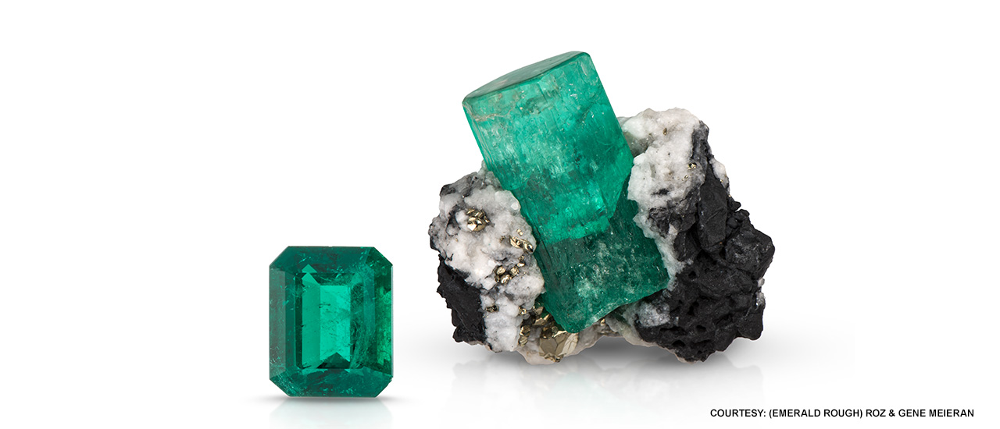

For thousands of years, emerald has evoked rebirth and renewal. emerald is the perfect color for spring.
The variations of this rich green color suggest lush gardens. According to legend, emerald has the power to make its wearer more intelligent and quick-witted, and it was once thought to cure diseases like Malaria. The gemstones are given for the 20th and 35th wedding anniversaries.

From Egyptian pharaohs to Inca emperors, emerald has enchanted royalty. Cleopatra used emerald in her adornments. The Crown of the Andes was created in colonial South America.
The May birthstone is the focal point of a gold rosary necklace with a cross made of seven emeralds, recovered from the Nuestra Señora de Atocha shipwreck, represent a small fraction of the colonial wealth sent to Spain from the New World.
The word “Emerald” comes from the ancient Greek word smaragdos, a green gem
Science shows that the color green relieves stress and eye strain.
The green birthstone was thought to have powers. By placing it under the tongue, one could be see into the future. It made one an eloquent speaker and exposed lovers who made false promises.
The best emeralds have been from the source of Colombia for more than 500 years.
Emeralds are also found in the state of Minas Gerais, Brazil.
The May birthstone can also be found in Zambia, Africa.
Emerald is more susceptible to scratching than a diamond because it is a 7.5 to 8 on the Mohs scale.
The safest way to clean emeralds is to use a soft brush and soapy water.